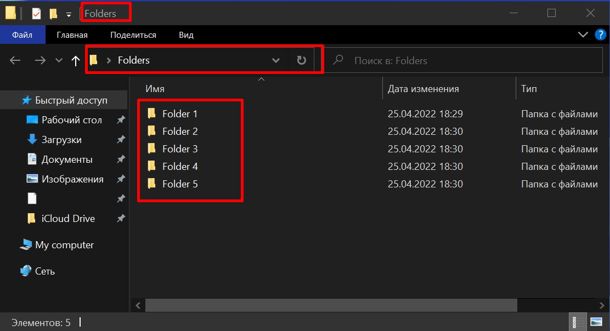

Что такое Git и GitHub?
Git — это система контроля версий, позволяющая эффективно управлять историей исходного кода. Любые изменения, которые ты вносишь в проект могут быть сохранены с помощью Git. Ты можешь вернуться к любым ранее сохраненным версиям. Без Git пришлось бы создавать копии проекта, что было бы проблемой при увеличении объема кода в приложении. На текущий момент Git — стандарт для разработки.
GitHub можно считать соцсетью для хранения кода. Здесь вы можете попрактиковаться в разработке и придумать что-то свое, найти множество open-source проектов, передовых технологий, различных функций и дизайнов.
На GitHub вы учитесь и участвуете в других проектах, храните код для работы или учебы, берете код других проектов и вникаете во все детали. А еще вы можете создавать сайты бесплатно напрямую из репозитория.
Для начинающих может быть непонятна разница между этими терминами.
Git — система контроля версий. Технология, которую можно скачать на компьютер.
Github — сервис, который позволяет работать с твоими Git проектами. Это называется
репозитории. Помимо
Github существуют другие сервисы (например Bitbucket, GitLab).
Git Bash. Это программой мы будем постоянно пользоваться, поэтому лучше скопировать эту программу в доступное место или же закрепить на панели задач (я рекомендую закрепить на панели задач).
Git Bash работает по принципу указания пути к файлу. Этим же принципом работают хостинги и сервера. Допустим у нас есть в папка “New Folder” в рабочем столе. Если мы зайдём на свойства этой папки, в разделе Общие посмотрим строку Расположение то увидим там примерно следующее C:\Users\Username\Desktop. Это означает, что ваша папка находится в папке Desktop, которая в свою очередь находится в папке Username, которая находится в папке Users и которая находится в диске C. Обычный юзер, чтобы войти в эту папку, заходит в Мой компьютер > Диск С > Users > Username > Рабочий стол (Desktop). Но мы уже программисты и поэтому начиная с этого момента, чтобы войти, копировать, переместить, создать и т.д. файлы, будем пользоваться командами и терминалом Git Bash.
В отличие от Windows в терминале, чтобы войти в папку Desktop мы не
начинаем с C.
/c/Users/"Username"/ заменяем символом ~ потом ставим
/
(косую черту), а дальше пишем
Desktop.
Пример:
~/Desktop
Перемещение по репозиториям
Чтобы перемешаться, пользуемся командой cd.
Пример:
Чтобы переместиться в Рабочий стол, пишем следующую команду
cd ~/Desktop
Чтобы узнать, где мы находимся, пользуемся командоц pwd.
Пример:
Переместившись в Рабочий стол, я хочу узнать где я нахожусь. Пишу команду
pwd.

Обычный юзер, когда находится в какой-либо папке, видит то, что в ней находится. Чтобы нам, программистам, узнать через терминал, что находится в папке, в которой мы находим, пишем команду ls.
Пример:
Обычный юзер зашёл в Рабочий стол и открыл там обычную папку Folders и
видит, что в ней
находятся еще 5
папок.

Программист же находясь в папке Desktop (в рабочем столе) набирает команду cd Folders и переходит в папку Folders. Затем набрав команду ls и терминал выдаёт ему название папок, которые находятся в этой папке.
Чтобы узнать детальную информацию о файлах и папках находящихся в данной папке, надо набрать команду
ls -l.
В этом случае выходит информация о том когда эти файлы создавались или изменялись в последний раз.
ВОПРОС:
Я нахожусь в папке Folders. Мне надо перейти в папку Folder 2, которая находится в папке Folder 1, которая в свою очередь находится в папке Folders (В той папке, которой я нахожусь). Ответ пришлите мне в личку. (Примечание: чтобы обозначить папку, в которой вы находитесь, надо поставить точку. Пример: ./user/folder ) Если в название файла присутствует пробел, то пишем название в кавычках.
Ответ напишите в комментариях.
Ранее я указал, что чтобы начать с папки, в которой я нахожусь, надо поставить точку. Но чтобы
перейти назад, в папку с которого я перешёл в эту папку, то пользуемся двумя точками. Допустим, я нахожусь в
папке Folder 2 , которая в свою очередь находится в папке
Folder. Мне надо перейти в папку Folder 1 , а потом уже перейти в папку
Folder
3,
которая также
находится в
папке Folder 1.
Для этого пишем следующую команду:
cd ../"Folder 3"

C помощью .. (двух точек) мы переходим на одну папку назад, а потом уже в этой папке поставим / и указав название папки мы переходим на эту папку.
ВОПРОС:
Я нахожусь в папке Folder 2. Путь у папки такой
~/Desktop/Folders/Folder 1/Folder 2 Теперь мне надо перейти в папку Folders , затем перейти в папку Folder 2, которая находится в Folders, а дальше перейти уже в папку Folder 3, которая находится в папке Folder 2.
Т.е. мне надо перейти
отсюда~/Desktop/Folders/Folder 1/Folder 2
сюда~/Desktop/Folders/Folder 2/Folder 3
Ответ напишите в комментариях.
Создание папок
Чтобы создавать новую папку, программисту надо пользоваться командой mkdir.
Допустим мне надо создать папку MyName в папке, в которой я нахожусь. В данном случае я
пишу команду
mkdir ./MyName

С помощью точки я указываю место, где я нахожусь. А затем пишу название папки. Выше на рисунке вы можете увидеть результат, который я показал с помощью команды ls -la. Можно одной командой создать несколько папок. Для этого просто между названиями надо ставить пробел.
ВОПРОС:
Ответ напишите в комментариях.
- Я нахожусь тут
~/Desktop/Folders/A/B
мне надо перейти сюда~/Desktop/Folders , а затем отсюда
создать папку под названием E тут~/Desktop/Folders/B/A не переходя сюда.- Я нахожусь тут
~/Desktop/Folders/A/B, а затем отсюда
создать папку под названием F тут~/Desktop/Folders/B/A не переходя сюда.
Создание файлов
Мы научились создавать папки, а теперь научимся создавать файлы. У каждого файла существует свой тип. Называет этот тип расширением. Увидеть расширения файла мы можем, включив функцию Расширения имён файлов.
Для этого мы должны зайти в любую папку (как обычный юзер) и сделать следующее.
-
Кликнуть на Вид

-
Затем кликнуть на Расширения имён файлов
Теперь после названия файлов будет точка, а дальше уже расширение этого файла. Например:

Этим же принципом мы будем пользоваться, при создании файлов. Создавать файлы мы будем с помощью команды touch. Мы пишем эту команду, затем пробел, название файла, точку и расширение файла. Пример:
touch a.docx
Чтобы создать несколько файлов, между названиями с расширениями ставим пробел. Пример:
touch a.docx b.html
ВОПРОС:
Ответ напишите в комментариях.
- Я нахожусь тут ~/Desktop/Folders/A/B,
мне надо перейти сюда ~/Desktop/Folders/B/C и создать тут 3 файла,
с названиями A с расширением docx, B с расширением html, C с расширением .css .- Я нахожусь тут
~/Desktop/Folders/B/C,
находясь здесь мне надо создать тут~/Desktop/Folders/A/B 3 файла,
с названиями A с расширением docx, B с расширением html, A с расширением .docx .
Удаление файлов
Мы научились создавать папки и файлы, сейчас же научимся их удалять.
ОСТОРОЖНО!
Прежде чем удалять файлы, убедитесь, что вы правильно указали путь к файлу и названию файла, т.к. восстановить удалённый через терминал файл не получится.
Чтобы удалить файл, мы пользуем командой rm (от слова remove). Допустим, я хочу удалить файл A.docx . В таком случае я пишу команду rm a.docx . Пример:

Я создал 3 файла с разными расширениями. Сейчас я их удалю с помощью команды rm.

Как видите, одной простой командой я удалил сразу несколько файлов. Чтобы удалить папку, мы пользуемся командой rm -rf.

Перемещение файлов
Теперь научимся перемещать файл из одной папки в другую. Для этого используем команду git
mv. Например, у нас есть 2 папки
Odin1, Odin2. В папке Odin1 есть
файл index.html, а в папке Odin2 есть файл index2.html.
Нам надо из папки Odin1 взять файл index.html и переместить в папку
Odin2. Для этого набираем команду
mv ./Odin1/index.html ./Odin2.
Чтобы очистить окно с командами, набираем команду clear. Если же не хотим удалять, а просто хотим поднять их, то нажимаем ctrl + l. Чтобы открыть папку в которой мы находимся в visual studio code, набираем команду code и пишем рядом точку. Чтобы открыть просто папку, то пишем команду explorer.
Все команды, которые мы прошли.
- pwd – показывает где я нахожусь.
- cd – перемещаемся по директориям.
- ls, ls -l, ls -la – показывает, что находится в папке.
- mkdir – создаём папку
- touch – создаём файл
- rm – удаляем файл
- rm -r – удаляем папку (я объяснил Вам команду rm -rf, но лучше использовать эту команду)
- rm – перемещаем файлы
- clear – очищает историю команд
- code . или же вместо точки путь – открывает папку в visual studio
- explorer – открыть папку просто в окне (для мака пишем open)
Тут я прошёл основные команды. Более подробно можно прочитать в интернете или же по ссылкам ниже.
Дополнительно:
- Подробнее прочитать можете тут https://git-scm.com/book/ru/v2 и тут https://githowto.com/ru
- Потренироваться можете тут https://linuxjourney.com/, там выберите русский язык
Домашнее задание:
Создать одну папку, потом внутри создать еще 4, внутри каждого должны быть по 3 файла с разными расширениями.
Ответ напишите в комментариях.